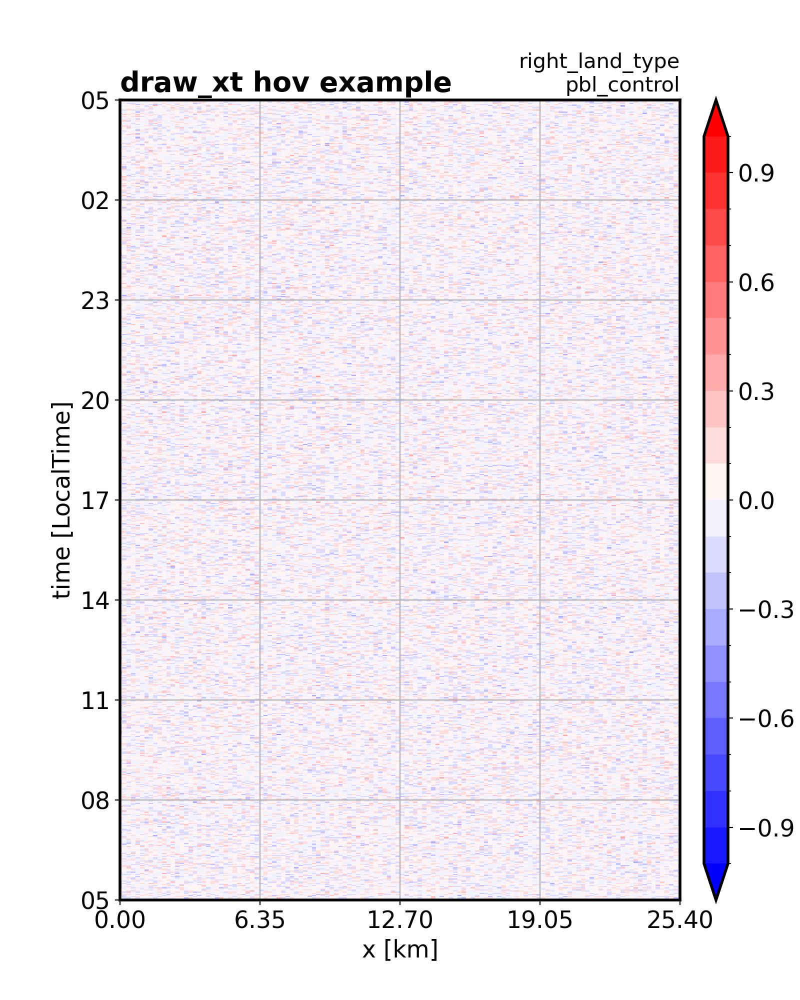
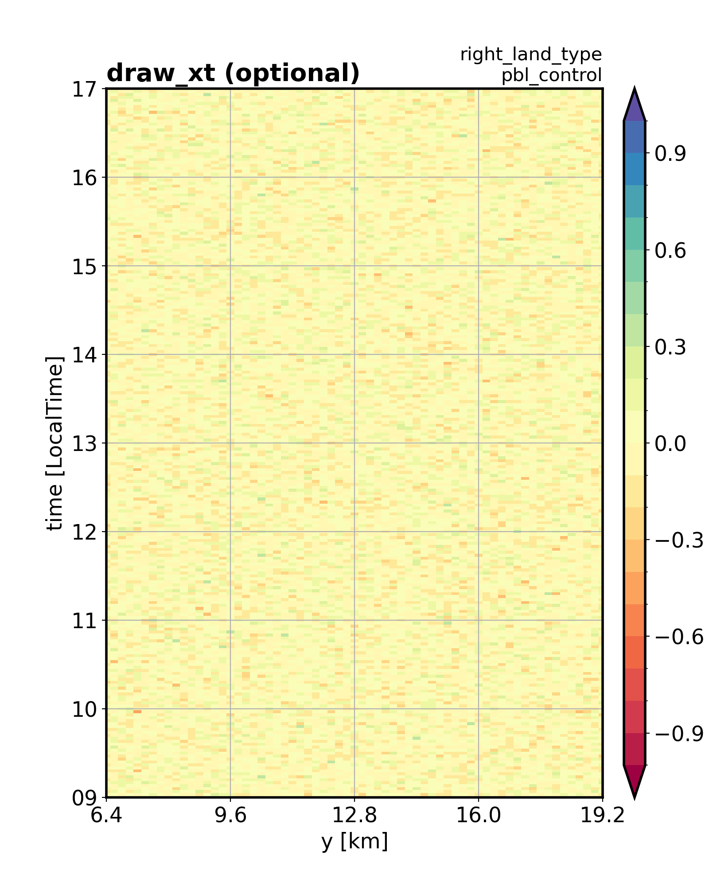

vvmtools.plot.DataPlotter.draw_xt#
- DataPlotter.draw_xt(data, levels, extend, x_axis_dim='x', cmap_name='bwr', title_left='', title_right='', xlim=None, ylim=None, figname='')[source]#
This function creates a x-t plot for a 2D data over spatial (x or y) and temporal (t) dimensions.
- Parameters:
data (numpy.ndarray) – 2D array (t,x) of data values to be plotted, with dimensions corresponding to the time and x_axis_dim axes in DOMAIN.
levels (list or numpy.ndarray) – Discrete boundaries for color intervals, used for normalizing the color mapping of data values.
extend (str) – Specifies color bar extension behavior at the boundaries; can be one of ‘both’, ‘min’, or ‘max’.
x_axis_dim (str, optional) – The spatial dimension to plot on the x-axis, ‘x’ or ‘y’ (default is ‘x’).
cmap_name (str, optional) – The name of the colormap to use (default is ‘bwr’ for blue-white-red) same as matplotlib.
title_left (str, optional) – Title text to display on the left side of the plot.
title_right (str, optional) – Title text to display on the right side of the plot. The ‘EXPNAME’ will add in second line.
xlim (tuple, optional) – Tuple specifying the minimum and maximum limits for the x-axis. If None, the limits are derived from DOMAIN.
ylim (tuple, optional) – Tuple specifying the minimum and maximum limits for the y-axis (time). If None, the limits are derived from DOMAIN.
figname (str, optional) – Filename to save the plot. If not provided, the plot is not saved.
- Returns:
The generated figure (fig), main axis (ax), and color bar axis (cax) objects.
- Return type:
tuple(matplotlib.figure.Figure, matplotlib.axes.Axes, matplotlib.axes.Axes)
Examples
Initialize the DataPlotter Classes
import numpy as np from vvmtools.plot import DataPlotter import matplotlib.pyplot as plt # prepare expname and data coordinate expname = 'pbl_control' nx = 128; x = np.arange(nx)*0.2 ny = 128; y = np.arange(ny)*0.2 nz = 50; z = np.arange(nz)*0.04 nt = 721; t = np.arange(nt)*np.timedelta64(2,'m')+np.datetime64('2024-01-01 05:00:00') # create dataPlotter class figpath = './fig/' data_domain = {'x':x, 'y':y, 'z':z, 't':t} data_domain_units = {'x':'km', 'y':'km', 'z':'km', 't':'LocalTime'} dplot = DataPlotter(expname, figpath, data_domain, data_domain_units)
Create the 2d data.
np.random.seed(0) data_xt2d = np.random.normal(0, 0.1, size=(nt,nx))
draw x-t diagram.
fig, ax, cax = dplot.draw_xt(data = data_xt2d, levels = np.arange(-1,1.001,0.1), extend = 'both', title_left = 'draw_xt hov example', title_right = f'right_land_type', figname = 'test_hov.png', ) plt.show()
 draw x-t diagram with optional configuration.
fig, ax, cax = dplot.draw_xt(data = data_xt2d, levels = np.arange(-1,1.001,0.1), extend = 'both', x_axis_dim = 'y', cmap_name = 'Spectral', xlim = (6.4, 19.2), ylim = (np.datetime64('2024-01-01 09:00:00'), np.datetime64('2024-01-01 17:00:00') ), title_left = 'draw_xt (optional)', title_right = f'right_land_type', figname = '' ) plt.show()

{kind=link}
{kind=link}